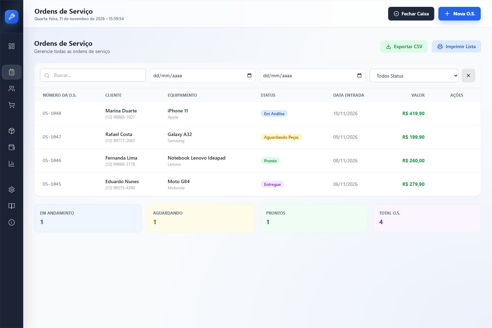

01 / 03 Ordens de Serviço & Garantias
Cada aparelho com histórico claro do início ao fim
Acompanhe a fila de reparos por status, filtre por período ou cliente e mantenha diagnóstico, checklist e orçamento dentro da mesma O.S.
- Etapas visuais: Em Análise, Aguardando Peças, Pronto e Entregue
- Registro do equipamento, defeito relatado, técnico e parecer técnico
- Peças vinculadas à O.S. com cálculo transparente de valor e mão de obra
- Emissão de recibo, termo de garantia e envio direto via WhatsApp
Abre a fila real com as ordens da Assistência TechFix para filtrar e inspecionar.